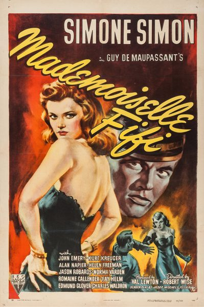

Mademoiselle Fifi

Starring: Simone Simon, John Emery, Kurt Kreuger
Director: Robert Wise
Producer: Val Lewton
Mademoiselle Fifi is a 1944 American period film directed by Robert Wise for RKO, in his solo directorial debut. It was written by Josef Mischel and Peter Ruric based on two short stories by Guy de Maupassant, "Mademoiselle Fifi" and "Boule de Suif". The film features an ensemble cast headed by Simone Simon, John Emery and Kurt Kreuger, and was produced by noted B-film producer Val Lewton.
Trivia
- Producer Val Lewton wanted to break out of producing horror films, and suggested that RKO make a period film based on the short stories of Guy de Maupassant, with Erich von Stroheim and Simone Simon.
- George Sanders was approached about playing Lieutenant Fifi.
- Prior to directing Mademoiselle Fifi, his first official solo directorial credit, film editor Robert Wise had directed retakes and additional sequences on The Magnificent Ambersons while Orson Welles was in South America, and had replaced director Gunther von Fritsch on Val Lewton's The Curse of the Cat People.
Filming Locations
- The outdoor snow scenes were shot at Big Bear Lake, California.
Previous Showings
1 Run • 1 Festival
All runs on record (1):
- November 29 - December 1, 2000Horror Programw/ The Curse of the Cat People